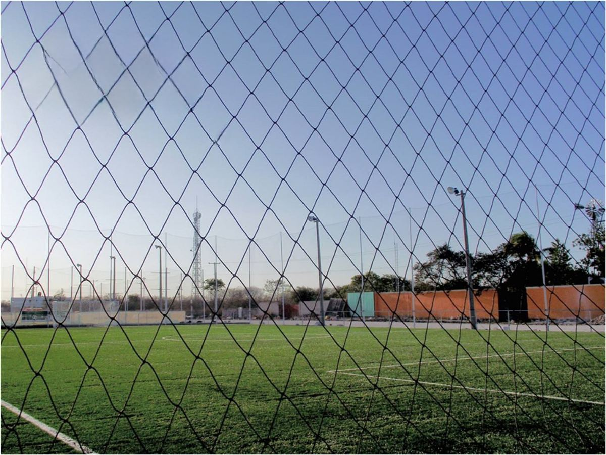
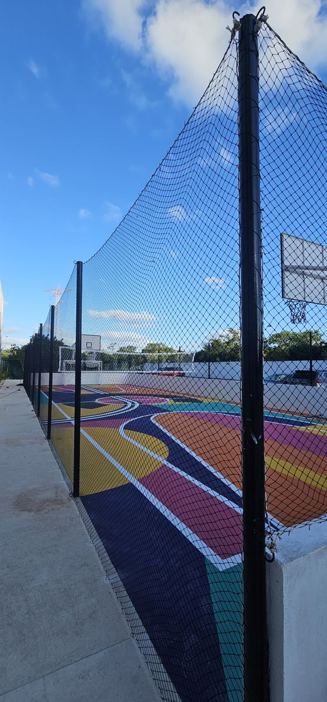
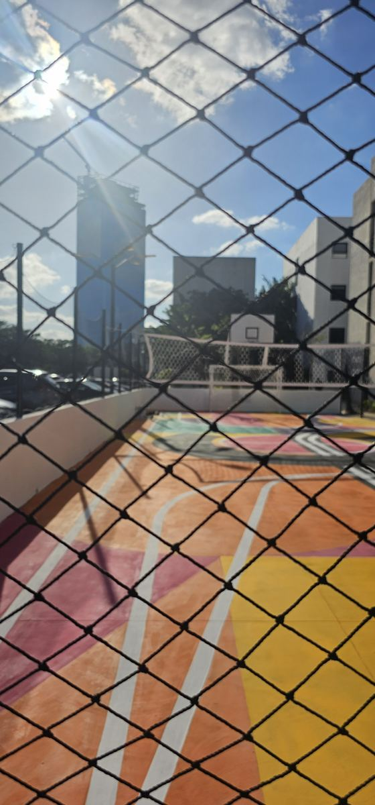

Nuestro producto más fuerte. La misma red perimetral cierra una cancha, protege una obra, contiene ganado o resguarda una pajarera — todo a la medida.
Cotizar mi proyectoLa red perimetral es, ante todo, un sistema de cerramiento — el deporte es uno de sus muchos usos.



Cada proyecto se cotiza a la medida — esta es una referencia general.
| Aberturas disponibles | 1", 2", 3", 4" |
| Color | Negro |
| Medidas | A la medida — se cotiza por m² |
| Instalación | Incluida / disponible según proyecto |